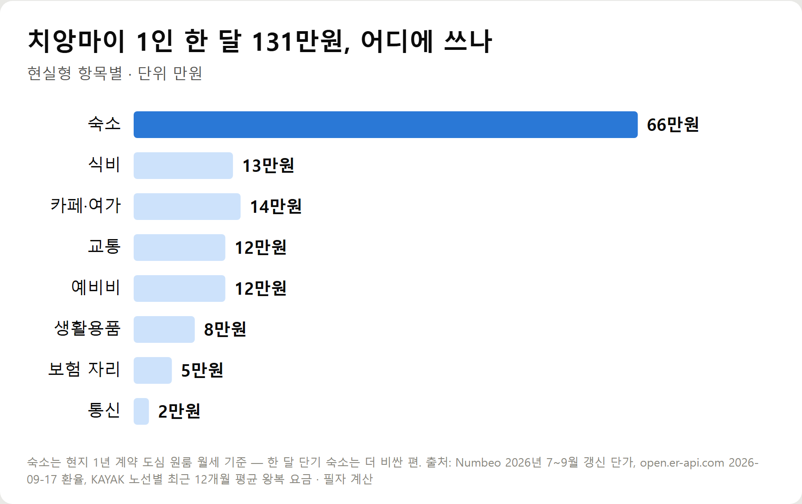
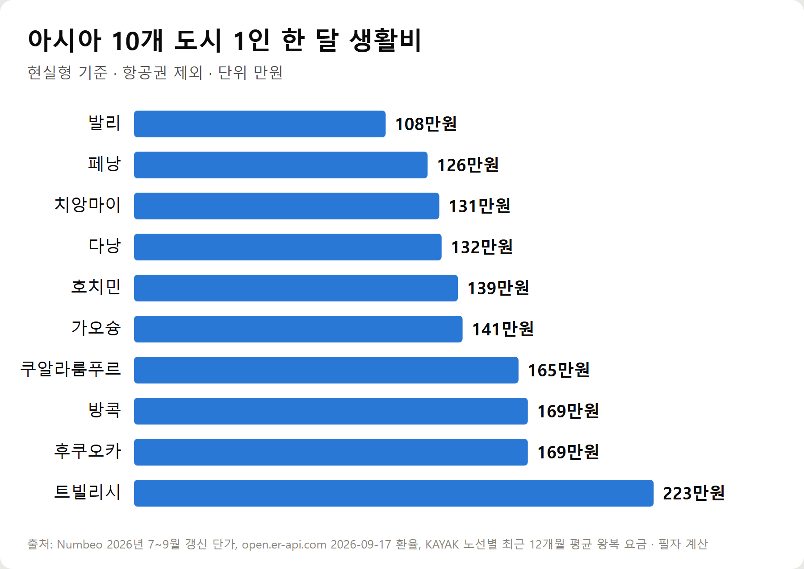
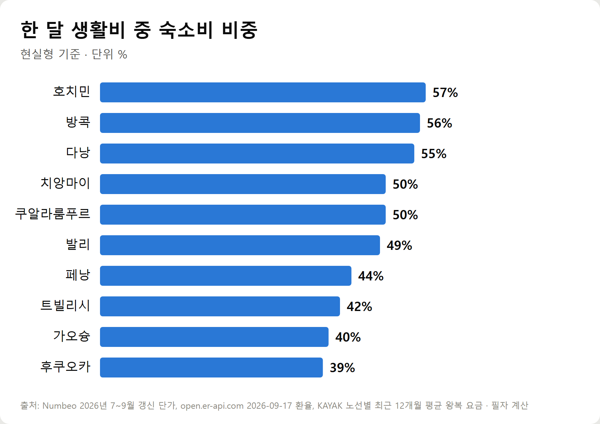
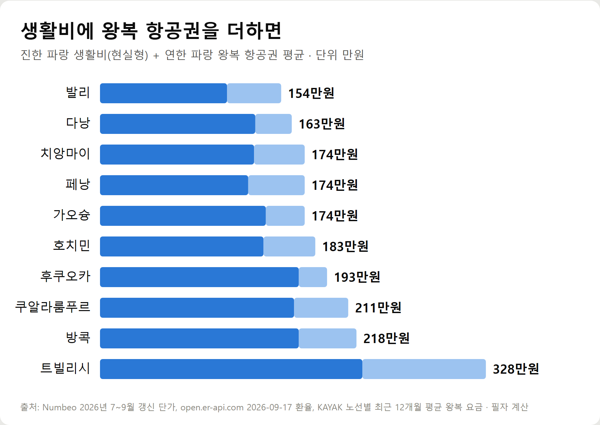

<meta charset="utf-8">
<title>해외 한 달 생활비 계산표 — 나의 투자 그리고 행복한 여행</title>
<meta name="description" content="아시아 10개 도시 1인 한 달 생활비를 숙소·식비·교통 등 8개 항목으로 계산했습니다. 절약·현실·여유형 3단계와 왕복 항공권 포함 총액, 숙소비 비중까지 2026년 9월 17일 환율 기준.">
<meta name="viewport" content="width=device-width, initial-scale=1">
<link rel="canonical" href="https://worldtraveler1.tistory.com/86">
<link rel="preconnect" href="https://fonts.googleapis.com">
<link rel="preconnect" href="https://fonts.gstatic.com" crossorigin>
<link rel="stylesheet" href="https://fonts.googleapis.com/css2?family=Hahmlet:wght@400;600;800&family=IBM+Plex+Mono:wght@400;500&family=IBM+Plex+Sans+KR:wght@300;400;500;600&display=swap">

<style>
  :root{
    --paper:#F2EEE6;--surface:#FAF8F3;--surface-2:#E7E1D5;
    --ink:#191510;--ink-2:#4A4235;--ink-3:#7D7364;
    --line:#D6CEBF;--line-soft:#E4DDD0;--accent:#B06A15;--accent-bright:#C2761A;
    --up:#E5484D;--down:#3B82F6;
    --f-display:"Hahmlet",'Nanum Myeongjo',"Apple SD Gothic Neo",serif;
    --f-body:"IBM Plex Sans KR","Apple SD Gothic Neo","Malgun Gothic",sans-serif;
    --f-mono:"IBM Plex Mono","SFMono-Regular",Consolas,monospace;
    --pad:clamp(20px,5vw,64px);
  }
  @media (prefers-color-scheme:dark){
    :root:not([data-theme="light"]){
      --paper:#0B1120;--surface:#121A2C;--surface-2:#1A2439;
      --ink:#E9EEF7;--ink-2:#A9B5C9;--ink-3:#72809A;
      --line:#26314A;--line-soft:#1D2739;--accent:#E8A33D;--accent-bright:#F0B45C;
    }
  }
  *{box-sizing:border-box;}
  body{margin:0;background:var(--paper);color:var(--ink);font-family:var(--f-body);
    font-weight:300;font-size:1rem;line-height:1.75;-webkit-font-smoothing:antialiased;}
  a{color:inherit;}
  img{max-width:100%;height:auto;}
  .wrap{max-width:760px;margin:0 auto;padding-inline:var(--pad);}
  .nav{position:sticky;top:0;z-index:20;background:color-mix(in srgb,var(--paper) 88%,transparent);
    backdrop-filter:saturate(180%) blur(12px);border-bottom:1px solid var(--line);}
  .nav-in{display:flex;align-items:center;justify-content:space-between;height:58px;}
  .brand{font-family:var(--f-display);font-weight:600;font-size:1rem;letter-spacing:-.02em;text-decoration:none;}
  .back{font-family:var(--f-mono);font-size:.72rem;color:var(--ink-3);text-decoration:none;}
  .article{padding-block:clamp(40px,7vw,72px) clamp(56px,9vw,96px);}
  .eyebrow{font-family:var(--f-mono);font-size:.68rem;letter-spacing:.16em;text-transform:uppercase;
    color:var(--accent);margin:0 0 14px;}
  h1{font-family:var(--f-display);font-weight:800;font-size:clamp(1.6rem,4.4vw,2.3rem);
    line-height:1.3;letter-spacing:-.03em;margin:0 0 16px;}
  .byline{font-family:var(--f-mono);font-size:.72rem;color:var(--ink-3);
    padding-bottom:24px;border-bottom:1px solid var(--line);margin-bottom:32px;}
  h2{font-family:var(--f-display);font-weight:600;font-size:1.25rem;letter-spacing:-.02em;margin:42px 0 14px;}
  h3{font-family:var(--f-display);font-weight:600;font-size:1.05rem;letter-spacing:-.02em;
    margin:30px 0 10px;padding-top:14px;border-top:1px solid var(--line-soft);}
  h3 .code{font-family:var(--f-mono);font-size:.7rem;font-weight:400;color:var(--ink-3);margin-left:6px;}
  p{margin:0 0 18px;color:var(--ink-2);}
  ul.checks{margin:0 0 18px;padding-left:20px;color:var(--ink-2);}
  ul.checks li{margin-bottom:8px;font-size:.94rem;}
  table{width:100%;border-collapse:collapse;font-size:.88rem;margin-bottom:8px;}
  th{font-family:var(--f-mono);font-size:.66rem;letter-spacing:.06em;text-transform:uppercase;
    color:var(--ink-3);text-align:right;padding:8px 6px;border-bottom:1px solid var(--line);}
  th:first-child{text-align:left;}
  td{padding:10px 6px;border-bottom:1px solid var(--line-soft);color:var(--ink-2);}
  td.num{font-family:var(--f-mono);text-align:right;font-variant-numeric:tabular-nums;}
  td.up{color:var(--up);} td.down{color:var(--down);}
  .scroll{overflow-x:auto;}
  figure{margin:22px 0;}
  figure img{display:block;border-radius:3px;background:var(--surface-2);}
  figcaption{margin-top:8px;font-family:var(--f-mono);font-size:.68rem;color:var(--ink-3);text-align:center;}
  .note{margin-top:34px;padding:16px 18px;border-left:3px solid var(--accent);
    background:var(--surface);border-radius:0 3px 3px 0;}
  .note p{margin:0;font-size:.85rem;color:var(--ink-3);}
  .foot{border-top:1px solid var(--line);background:var(--surface);padding-block:30px 38px;}
  .foot p{margin:0;font-size:.8rem;color:var(--ink-3);}
</style>

<nav class="nav">
  <div class="wrap nav-in">
    <a class="brand" href="../index.html">나의 투자 그리고 행복한 여행</a>
    <a class="back" href="../index.html#stocks">← 시황으로</a>
  </div>
</nav>

<main class="wrap article">
  <p class="eyebrow">Market</p>
  <h1>해외 한 달 생활비 계산표 — 절약·현실·여유형 3단계와 항공권 포함 총액 (2026년 9월 17일 환율)</h1>
  <p class="byline">여행 · 2026-09-17 기준</p>

  <p><b>이 포스팅은 네이버 쇼핑 커넥트 활동의 일환으로, 판매 발생 시 수수료를 제공받습니다.</b></p>
  <p>한 줄 요약: 1인 현실형 한 달 생활비는 발리 108만·페낭 126만·치앙마이 131만원부터 트빌리시 223만원까지이고, 그중 숙소비가 39~57%입니다. 왕복 항공권 평균을 더하면 발리 154만·다낭 163만원이 가장 낮습니다.</p>
  <p>Numbeo 2026년 7~9월 단가, 2026년 9월 17일 환율, KAYAK 노선별 최근 12개월 평균 왕복 요금으로 계산한 기록입니다.</p>
  <p><b>2026년 9월 기준 최신 물가와 환율을 바탕으로 작성했습니다.</b> (작성 2026년 9월 17일)</p>
  <h2>핵심 요약 — 해외 한 달 생활비</h2>
  <ul class="checks">
    <li>1인 현실형 한 달 생활비는 아시아 10개 도시에서 108만~223만원 (항공권 제외)</li>
    <li>치앙마이는 절약형 77만 · 현실형 131만 · 여유형 192만원</li>
    <li>숙소비 비중은 호치민 57% · 방콕 56% · 치앙마이 50% — 예산은 숙소에서 갈린다</li>
    <li>왕복 항공권까지 더하면 발리 154만 · 다낭 163만 · 치앙마이 174만원 순으로 낮다</li>
    <li>숙소비는 현지 1년 계약 월세 기준이라, 한 달만 빌리면 이보다 올라간다</li>
  </ul>
  <h2>한 달 예산은 여덟 칸으로 나눠 짠다</h2>
  <p>해외에서 한 달을 지낼 때 돈이 나가는 곳은 여덟 가지입니다. 이 칸을 먼저 만들어 두면 도시를 바꿔도 같은 기준으로 비교할 수 있습니다.</p>
  <ul class="checks">
    <li>숙소 — 도심 원룸(1베드룸) 월세</li>
    <li>식비 — 현지 식당 한 끼 가격 × 45 (하루 한 끼 외식, 나머지는 장보기)</li>
    <li>교통 — 대중교통 월 정기권 + 택시·차량호출 5만원</li>
    <li>통신 — 현지 휴대폰 요금</li>
    <li>생활용품 — 세탁·생활용품·전기 추가분 8만원</li>
    <li>카페·여가 — 카푸치노 15잔 + 관광·입장료 10만원</li>
    <li>보험 — 예산 자리 5만원 (실제 보험료는 나이·보장별로 직접 조회)</li>
    <li>예비비 — 위 합계의 10%</li>
  </ul>
  <p>항공권은 이 여덟 칸에 섞지 않습니다. 매달 나가는 돈이 아니라 한 번 내는 돈이라, 두 달·세 달 머물면 한 달에 드는 몫이 줄어들기 때문입니다.</p>
  <p>단가는 물가 비교 사이트 Numbeo의 2026년 7~9월 갱신값이고, 2026년 9월 17일 환율(1바트 41.07원, 1링깃 334원, 1대만달러 43.1원, 100엔 882원, 1라리 525원, 1만동 529원, 1만루피아 776원)로 바꿨습니다. 금액은 만원 단위로 반올림해 항목 합계와 총액이 1만원 정도 다를 수 있습니다.</p>
  <h2>치앙마이 한 달 131만원, 항목별로 뜯어보기</h2>
  <figure><figcaption>치앙마이 1인 현실형 한 달 생활비 항목별 금액 (단위: 만원, 2026년 9월 17일 환율)</figcaption></figure>
  <div style="overflow-x:auto"><table border="1" cellpadding="6" style="border-collapse:collapse;width:100%;font-size:14px;line-height:1.5"><thead><tr><th style="background:#f3f5f8">항목</th><th style="background:#f3f5f8">절약형</th><th style="background:#f3f5f8">현실형</th><th style="background:#f3f5f8">여유형</th></tr></thead><tbody><tr><td>숙소</td><td>40</td><td>66</td><td>85</td></tr><tr><td>식비</td><td>9</td><td>13</td><td>20</td></tr><tr><td>교통</td><td>9</td><td>12</td><td>17</td></tr><tr><td>통신</td><td>2</td><td>2</td><td>2</td></tr><tr><td>생활용품</td><td>5</td><td>8</td><td>10</td></tr><tr><td>카페·여가</td><td>4</td><td>14</td><td>32</td></tr><tr><td>보험 자리</td><td>5</td><td>5</td><td>8</td></tr><tr><td>예비비</td><td>4</td><td>12</td><td>17</td></tr><tr><td><b>합계</b></td><td><b>77</b></td><td><b>131</b></td><td><b>192</b></td></tr></tbody></table></div>
  <p>세 단계의 차이는 이렇게 잡았습니다.</p>
  <ul class="checks">
    <li>절약형 — 외곽 원룸, 하루 외식 한 끼 값으로 세 끼 해결, 여가 최소, 예비비 5%</li>
    <li>현실형 — 도심 원룸, 외식 하루 한 끼 + 장보기, 카페 주 3~4회, 예비비 10%</li>
    <li>여유형 — 숙소비 30% 상향(더 좋은 숙소나 단기 레지던스), 외식·여가 확대</li>
  </ul>
  <p>현실형에서 숙소 66만원을 빼면 나머지 일곱 칸을 다 합쳐도 65만원입니다. 식비를 아무리 줄여도 몇만원이지만, 숙소를 외곽으로 옮기면 절약형처럼 26만원이 줄어듭니다.</p>
  <h2>아시아 10개 도시 한 달 생활비 비교표</h2>
  <figure><figcaption>아시아 10개 도시 1인 현실형 한 달 생활비, 항공권 제외 (단위: 만원)</figcaption></figure>
  <div style="overflow-x:auto"><table border="1" cellpadding="6" style="border-collapse:collapse;width:100%;font-size:14px;line-height:1.5"><thead><tr><th style="background:#f3f5f8">도시</th><th style="background:#f3f5f8">절약형</th><th style="background:#f3f5f8">현실형</th><th style="background:#f3f5f8">숙소</th><th style="background:#f3f5f8">여유형</th><th style="background:#f3f5f8">왕복 항공 평균</th><th style="background:#f3f5f8">현실형+항공</th></tr></thead><tbody><tr><td>발리</td><td>50</td><td><b>108</b></td><td>53</td><td>163</td><td>46</td><td>154</td></tr><tr><td>페낭</td><td>70</td><td><b>126</b></td><td>55</td><td>191</td><td>48</td><td>174</td></tr><tr><td>치앙마이</td><td>77</td><td><b>131</b></td><td>66</td><td>192</td><td>43</td><td>174</td></tr><tr><td>다낭</td><td>78</td><td><b>132</b></td><td>72</td><td>196</td><td>31</td><td>163</td></tr><tr><td>호치민</td><td>70</td><td><b>139</b></td><td>79</td><td>205</td><td>44</td><td>183</td></tr><tr><td>가오슝</td><td>86</td><td><b>141</b></td><td>56</td><td>214</td><td>33</td><td>174</td></tr><tr><td>쿠알라룸푸르</td><td>95</td><td><b>165</b></td><td>83</td><td>245</td><td>46</td><td>211</td></tr><tr><td>방콕</td><td>89</td><td><b>169</b></td><td>94</td><td>245</td><td>49</td><td>218</td></tr><tr><td>후쿠오카</td><td>96</td><td><b>169</b></td><td>66</td><td>252</td><td>24</td><td>193</td></tr><tr><td>트빌리시</td><td>136</td><td><b>223</b></td><td>93</td><td>332</td><td>105</td><td>328</td></tr></tbody></table></div>
  <p>단위는 만원, 1인 기준입니다. 왕복 항공권은 KAYAK 한국어판 노선 페이지의 최근 12개월 평균 요금(2026년 9월 15일 조회)이며, 시기와 예약 시점에 따라 크게 달라집니다.</p>
  <h2>숙소비 비중 — 도시마다 돈이 새는 곳이 다르다</h2>
  <figure><figcaption>도시별 한 달 생활비 중 숙소비 비중 (현실형 기준)</figcaption></figure>
  <p>호치민(57%)·방콕(56%)·다낭(55%)은 생활비의 절반 이상이 숙소입니다. 이런 도시는 숙소만 잘 구하면 예산이 크게 내려갑니다.</p>
  <p>반대로 후쿠오카(39%)·가오슝(40%)·트빌리시(42%)는 숙소 비중이 낮은 대신 식비가 무겁습니다. 후쿠오카 현실형 식비는 44만원, 트빌리시는 71만원으로 치앙마이(13만원)의 몇 배입니다. 이런 곳은 외식 횟수를 줄이는 쪽이 효과가 큽니다.</p>
  <p><b>주의할 점:</b> 이 숙소비는 Numbeo의 현지인 1년 계약 월세입니다. 한 달만 빌리는 에어비앤비·레지던스는 이보다 비싼 게 보통이라, 단기로 구한다면 여유형 숫자에 가깝게 보는 편이 안전합니다.</p>
  <h2>항공권을 더한 총액으로 보면 순위가 바뀐다</h2>
  <figure><figcaption>도시별 현실형 생활비 + 왕복 항공권 평균 (단위: 만원)</figcaption></figure>
  <p>생활비만 보면 방콕(169만)과 후쿠오카(169만)는 같은 수준이지만, 왕복 항공권 평균이 방콕 49만원·후쿠오카 24만원이라 총액은 218만원과 193만원으로 벌어집니다.</p>
  <p>트빌리시는 항공권 평균이 105만원으로 가장 비싸 총액이 328만원입니다. 대신 오래 머물수록 한 달에 드는 항공권 몫이 줄어듭니다. 치앙마이에 석 달 머물면 왕복 43만원이 한 달에 약 14만원꼴입니다.</p>
  <h2>목적별로 고르는 도시</h2>
  <ul class="checks">
    <li>예산을 가장 낮추고 싶다 — 발리(현실형 108만) · 페낭(126만)</li>
    <li>항공권까지 합친 총액이 낮아야 한다 — 발리 154만 · 다낭 163만</li>
    <li>비행이 짧고 항공권이 싸야 한다 — 후쿠오카(왕복 평균 24만) · 가오슝(33만)</li>
    <li>처음 해보는 한달살기 — 치앙마이. 생활비가 중간이고 장기체류 정보가 많다</li>
    <li>한 곳에 오래 머물고 싶다 — 트빌리시. 한국 여권 무비자 1년(항공권은 비싸다)</li>
  </ul>
  <h2>도시 유형별 장단점</h2>
  <div style="overflow-x:auto"><table border="1" cellpadding="6" style="border-collapse:collapse;width:100%;font-size:14px;line-height:1.5"><thead><tr><th style="background:#f3f5f8">유형</th><th style="background:#f3f5f8">장점</th><th style="background:#f3f5f8">단점</th></tr></thead><tbody><tr><td>동남아 (치앙마이·다낭·호치민·발리)</td><td>생활비가 낮고 외식이 싸다</td><td>숙소 가격 편차가 크고 우기·더위가 있다</td></tr><tr><td>말레이시아 (페낭·쿠알라룸푸르)</td><td>영어가 통하고 90일 체류</td><td>쿠알라룸푸르는 숙소비가 높다</td></tr><tr><td>대만·일본 (가오슝·후쿠오카)</td><td>비행이 짧고 항공권이 싸다</td><td>식비가 무겁다</td></tr><tr><td>조지아 (트빌리시)</td><td>무비자 1년 체류</td><td>항공권이 비싸고 식비 비중이 크다</td></tr></tbody></table></div>
  <p>한국 여권 무비자 체류 기간(2026년 9월 15일 확인): 태국 90일, 베트남 45일, 말레이시아 90일, 대만 90일, 일본 90일, 조지아 1년. 인도네시아(발리)는 도착비자 30일이며 관광세가 따로 있습니다. 입국 규정은 자주 바뀌니 출국 전 대사관 공지를 다시 확인하세요.</p>
  <h2>예산 짤 때 쓰는 예약 팁</h2>
  <ul class="checks">
    <li>첫 1주는 환불 가능한 숙소로 잡고, 현지에서 동네를 직접 본 뒤 나머지 기간을 계약한다</li>
    <li>항공권은 노선별 월평균 요금을 먼저 보고, 싼 달에 맞춰 출발일을 옮긴다</li>
    <li>카드 해외결제 수수료와 ATM 인출 수수료는 예비비 안에서 따로 계산해 둔다</li>
    <li>여행자보험은 보장 기간이 체류 기간 전체를 덮는지 확인한다</li>
    <li>환율이 1% 움직이면 현실형 130만원 기준 약 1만3천원이 바뀐다 — 9월 15일에서 17일 사이 바트 환율이 약 1.4% 올랐다</li>
  </ul>
  <h2>한 달 짐 준비 — 캐리어와 보조배터리</h2>
  <p>한 달 짐은 기내용 캐리어 하나에 맞추면 저가항공 수하물 요금과 현지 이동이 편해집니다. 기내 반입 규격은 항공사마다 다르니 예약한 항공사 기준을 먼저 확인하세요.</p>
  <p><a href="https://brandconnect.naver.com/affiliates/996273855578848?channelProductNo=10218785304" target="_blank" rel="sponsored noopener">상품 보러 가기 — 셀본 56cm(20인치) 기내용 캐리어</a></p>
  <p>지도·번역 앱을 종일 켜고 다니면 휴대폰 배터리가 오후에 바닥납니다. 보조배터리는 위탁 수하물에 넣을 수 없고, 기내 사용 규정도 항공사마다 다릅니다.</p>
  <p><a href="https://brandconnect.naver.com/affiliates/996274714153920?channelProductNo=10352481064" target="_blank" rel="sponsored noopener">상품 보러 가기 — 포켓쉴 20000mAh 기내반입 보조배터리</a></p>
  <h2>해외 한 달 생활비 자주 묻는 질문</h2>
  <p><b>Q. 한 달 100만원으로 가능한 곳이 있나요?</b></p>
  <p>절약형 기준으로는 발리(50만)·페낭(70만)·호치민(70만)·치앙마이(77만)가 100만원 아래입니다. 다만 외곽 원룸을 1년 계약 월세로 구했을 때의 계산이라, 한 달만 머문다면 100만원 안에 맞추기 어렵습니다.</p>
  <p><b>Q. 항공권은 왜 따로 계산하나요?</b></p>
  <p>항공권은 한 번 내는 돈이라 머무는 기간이 길수록 한 달에 드는 몫이 줄어듭니다. 한 달만 다녀온다면 생활비와 항공권을 더한 총액으로, 몇 달씩 머문다면 생활비로 비교하는 편이 정확합니다.</p>
  <p><b>Q. 보험료 5만원은 실제 가격인가요?</b></p>
  <p>아닙니다. 예산에 자리만 잡아 둔 금액입니다. 여행자보험료는 나이·보장·기간에 따라 달라지므로 보험다모아나 보험사 다이렉트에서 직접 조회한 값으로 바꿔 넣으세요.</p>
  <p><b>Q. Numbeo 숫자는 믿을 만한가요?</b></p>
  <p>이용자가 입력한 가격의 평균이라 동네·시기에 따라 차이가 납니다. 도시끼리 같은 기준으로 비교하는 데 쓰고, 실제 숙소 가격은 예약 사이트에서 날짜를 넣어 확인하는 것이 좋습니다.</p>
  <p><b>Q. 3개월 이상 나가 있으면 챙길 것이 있나요?</b></p>
  <p>국내 건강보험 급여정지 신고 대상이 됩니다. 출국 전 체크리스트는 관련 글에 따로 정리했습니다.</p>
  <h2>정리하면</h2>
  <p>해외 한 달 생활비는 1인 현실형 기준 아시아 10개 도시에서 108만~223만원입니다. 도시를 고르기 전에 여덟 칸 예산표를 만들고, 그중 가장 큰 칸인 숙소부터 정하면 나머지는 크게 흔들리지 않습니다.</p>
  <p>항공권은 따로 떼어 두고, 한 달이면 총액으로, 몇 달이면 생활비로 비교하세요.</p>
  <p><b>함께 보면 좋은 글</b></p><ul><li><a href="https://danielmoon82.github.io/moon/posts/overseas-month-200-2026-09-15.html">월 200만원 해외 한달살기 도시 10곳 — 비자·치안·기후 비교</a></li><li><a href="https://danielmoon82.github.io/moon/posts/stay-guide-2026-09-16.html">해외 한달살기 숙소 구하는 법 — 단기·월세 계약 순서</a></li><li><a href="https://danielmoon82.github.io/moon/posts/trip-checklist-2026-09-16.html">해외 장기여행 준비 체크리스트 — 건강보험·연금·예방접종</a></li></ul>
  <div class="note"><p>이 글은 Numbeo·KAYAK·환율 공개 자료를 바탕으로 계산한 일반 정보입니다. 한 달 생활비는 추정치이며 실제 비용은 숙소·환율·생활 방식에 따라 달라집니다. 비자·입국 규정은 출국 전 공식 사이트에서 다시 확인하세요.</p></div>
  <p>※ 기준 시점: 물가 Numbeo 2026년 7~9월 갱신값, 환율 2026년 9월 17일(open.er-api.com), 항공권 KAYAK 2026년 9월 15일 조회(최근 12개월 평균 왕복), 비자 2026년 9월 15일 확인.</p>
</main>

<footer class="foot">
  <div class="wrap"><p>나의 투자 그리고 행복한 여행 · 투자 판단의 참고 자료일 뿐, 매수·매도를 권유하지 않습니다.</p></div>
</footer>
